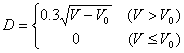
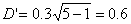

| Problem B: Necklace |
The people of a certain tribe produce circular ceramic discs with equal diameter by some rare clay. A necklace is formed by connecting one or more discs. The figure below shows a necklace made with 4 discs. Its length is 4 times the diameter of each disc.
The thickness of each disc is fixed. The diameter D and the volume of clay used V has the following relationship:

where V0 is the volume consumed in the baking process, in the same unit of V. When V ≤ V0, no ceramic discs can be made.
As an example, let Vtotal = 10, V0 = 1. If we use it to make 1 disc, V = Vtotal= 10, D = 0.9. If we divide the clay into 2 parts, the volume of each part V = Vtotal/2 = 5, and diameter of each disc formed is 
, thus the length of necklace formed this way is 1.2.
As per the above example, it is obvious that the lengths of necklaces differ as the number of discs made changes. Please write a program that computes the number of discs one should make so that the necklace formed is the longest.
Each line of input contains two numbers, Vtotal (0 < Vtotal ≤ 60000) and V0 (0 < V0 ≤ 600), as defined above. Input ends with a case where Vtotal = V0 = 0.
Each line of output should give the number of discs one should make so that the necklace formed is the longest. If this number is not unique, or no necklaces can be formed at all, output 0 instead.
10 1 10 2 0 0
5 0